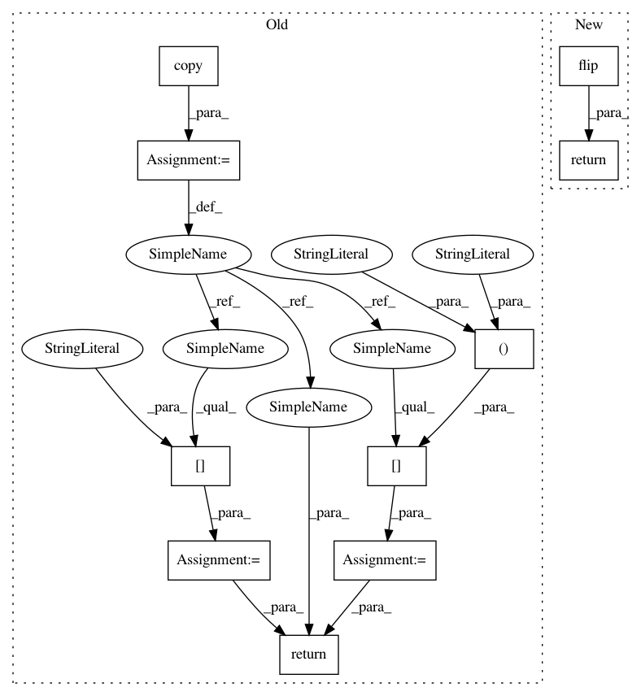

49f4e83ae4323e032bdd232e466e59b4aeceb458,dataset/batch_image.py,ImagesBatch,_flip_,#ImagesBatch#Any#Any#,560
Before Change
self
image = image.copy()
if mode == "lr":
image = image[:, ::-1]
elif mode == "ud":
image = image[::-1]
return image
def _invert_(self, image, channels="all"):
Invert givn channels.
After Change
if mode == "lr":
return PIL.ImageOps.mirror(image)
return PIL.ImageOps.flip(image)
def _invert_(self, image, channels="all"):
Invert givn channels.
In pattern: SUPERPATTERN
Frequency: 3
Non-data size: 10
Instances
Project Name: analysiscenter/batchflow
Commit Name: 49f4e83ae4323e032bdd232e466e59b4aeceb458
Time: 2018-03-28
Author: g.ivanov@analysiscenter.ru
File Name: dataset/batch_image.py
Class Name: ImagesBatch
Method Name: _flip_
Project Name: sony/nnabla
Commit Name: 08c76ed8511e2e4d7f7a3f4406df4c073112e6bd
Time: 2021-02-16
Author: Krishna.Wadhwani@sony.com
File Name: python/test/function/test_flip.py
Class Name:
Method Name: ref_flip
Project Name: analysiscenter/batchflow
Commit Name: 49f4e83ae4323e032bdd232e466e59b4aeceb458
Time: 2018-03-28
Author: g.ivanov@analysiscenter.ru
File Name: dataset/batch_image.py
Class Name: ImagesBatch
Method Name: _flip_
Project Name: analysiscenter/batchflow
Commit Name: d381fb0787395076ecb8a3bd6984f52a16793fae
Time: 2018-03-27
Author: g.ivanov@analysiscenter.ru
File Name: dataset/batch_image.py
Class Name: ImagesBatch
Method Name: _flip_